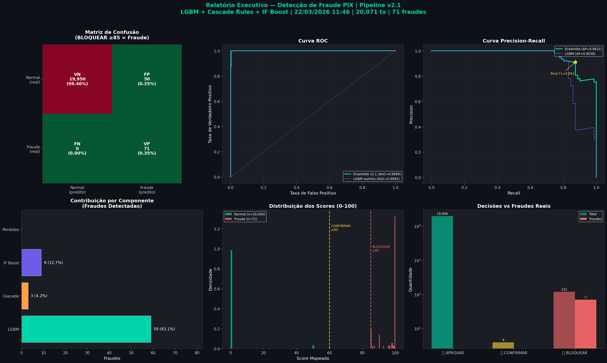

Gerado em 22/03/2026 11:46 | Base de teste: 20,071 transações | 71 fraudes (0.35%)
Atuam apenas quando o LGBM não flagga (score < 0.08000000000000002).
| Regra | Tx Capturadas |
|---|---|
| C2_BURST_INTENSO | 3 |
| C6_LGBM_BORDERLINE_COMBINADO | 1 |
| C4_CONTA_NOVA_ALTO_VALOR | 1 |
| C5_ESVAZIAMENTO | 1 |
| C1_BURST_FIRST_RECEIVER | 1 |

| Métrica | O que significa | Resultado |
|---|---|---|
| Fraudes Detectadas (Recall) | De cada 100 fraudes, quantas o sistema bloqueia | 100.0% |
| Falsos Alarmes (FPR) | Transações legítimas erroneamente bloqueadas | 0.25% (50) |
| Precisão | Quando bloqueia, qual a chance de ser fraude real | 58.7% |
| GAP | Distância entre menor fraude e normal mais alto | +-0.0 pontos |
| AUC-ROC | Nota geral (0.50=aleatório, 1.00=perfeito) | 0.9999 |
| Decisão | Score | Ação | Qtd | % | Fraudes | Taxa |
|---|---|---|---|---|---|---|
| 🟢 APROVAR | 0—59 | Liberar | 19,946 | 99.4% | 0 | 0.0000% |
| 🟡 CONFIRMAR | 60—84 | 2FA | 4 | 0.0% | 0 | 0.00% |
| 🔴 BLOQUEAR | 85—100 | Bloquear | 121 | 0.6% | 71 | 58.68% |
| P99.9 | 85.01 |
| Máximo | 97.38 |
| Mínimo | 85.01 |
| P5 | 85.06 |
| Mediana | 99.97 |
| Recall | 100.0% |
| Precision | 58.7% |
| F1 | 0.7396 |
| FP | 50 |
| FN | 0 |
| Recall | 100.0% |
| Precision | 56.8% |
| F1 | 0.7245 |
| FP | 54 |
| FN | 0 |
| Componente | Tipo | Papel |
|---|---|---|
| 🧠 LightGBM | Gradient Boosting (80 features) | Motor principal — threshold=0.0800 |
| 🔗 Cascade Rules | 6 regras determinísticas | Captura FN do LGBM: bursts, contas novas, esvaziamento |
| 🔍 Isolation Forest | 800 trees, boost condicional | Complementar: boost +0.08/+0.15 quando score IF alto |
| 📏 Mapeamento Híbrido | Interpolação não-linear | Raw → Score 0-100 |
| ⚠️ 24 Agravantes | 7 fases de análise | Ajuste fino por contexto |
| 🛡️ Eng. Social | 12 padrões combinatórios | Detecta golpes conhecidos |
| 🔍 Behavioral | 15 fatores RT | Anomalias comportamentais |
| Modelo | AUC-ROC | Average Precision |
|---|---|---|
| LGBM sozinho | 0.9992 | 0.9038 |
| Ensemble v2.1 | 0.9999 | 0.9631 |